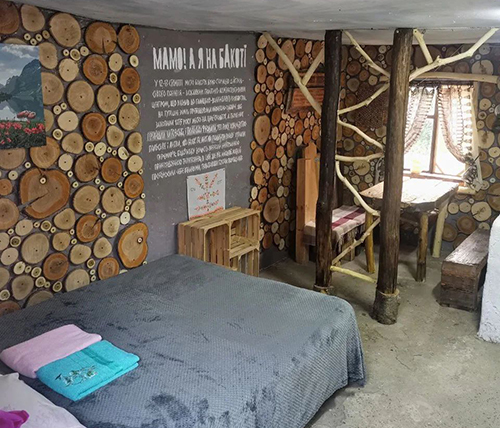
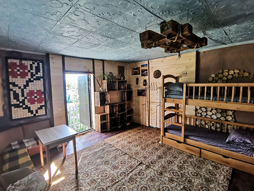
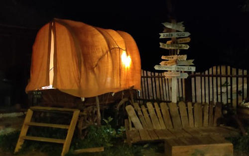
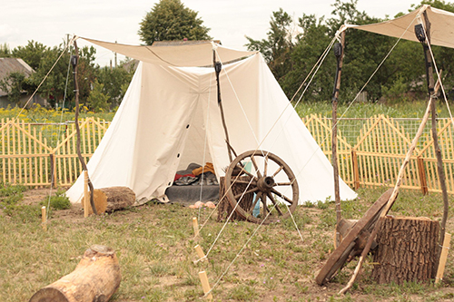

Бакота - це місцевість, що протягом століть зачаровує усіх, хто її відвідує.
Колись вона була столицею цілого заможного регіону - Пониззя,
а зараз за цим словом ховається містика, затоплені сторінки української історії,
долі людей і велич природи.
Садиба “Дім мандрівника” розташована усього за 3 кілометри від Бакоти і є місцем,
де у неформальному середовищі збираються люди з усієї України та з закордону.
Її створили веломандрівники Сергій Толстіхін і Юлія Мазур,
котрі на велосипедах побували у 31 країні Європи. Увесь досвід, набутий в подорожах,
вони втілили у своїй садибі.
Посиденьки біля вогнища, обмін цікавими життєвими історіями,
домашній затишок та неповторну атмосферу, що гуртує однодумців - все це ми пропонуємо вам
у “Домі мандрівника”!
Наші номери
- "Сімейна" кімната з пічкою
- "Дідурня", сімейна хатинка
- "Велокімната" хостельна
- "Віз" - нічліг у справжньому возі
- "Табір мандрівників". Саксонські намети
"Сімейна" кімната з пічкою

Мала затишна кімната для двох. Широченне ліжко + розкладне крісло.
Ідеально пасує для сім'ї з дитиною, або для компанії з 3 дорослих.
Душ і туалет всередині хати.
Кухонна зона теж всередині хати. Ціна: 500 грн за кімнату (2-3 людини)
- Кухня
- Душ
- WiFi
"Дідурня", сімейна хатинка

"Дідурня" - так колись називали сільську хатинку, літню кухню, де жили старенький дід і бабця.
І їм було добре жити окремо від своїх дітей і галасливих онуків,
і тим самим дітям було добре, що дідусь з бабцею мають своє окреме затишне помешкання.
Пропонуємо вам справжню автентичну "Дідурню" - окрему хатинку в "Домі мандрівника".
Є двоспальне ліжко і односпальна кушетка.
Кімната оздоблена в авторському сільському стилі і по суті є суцільною фотозоною)
- WiFi
"Велокімната" хостельна

Велика кімната хостельного типу. Функціонує в двох варіантах:
а) для сімейного відпочинку. 2 двоспальні ліжка на лежанках+ 1 двоповерхова кровать.
Свіжа застелена постіль. Верхній поверх лежанок не використовується.
Може розміститись до 6 людей.
б) для туристичних компаній. 2 двоповерхові туристичні лежанки
можуть розмістити мінімум 8 людей + 2 людини на двоповерховому ліжку.
Разом до 10 людей.
Є невеличка кухонна зона і розкладний обідній стіл. Душ і туалет на вулиці.
Душ завжди теплий (електричний нагрів).
Ідеально підходить для велосипедних груп і великих компаній, а також для сімей з дітьми.
- Кухня
- WiFi
"Віз" - нічліг у справжньому возі

А ви колись спали у справжньому возі? Ми впевнені, що ні і тепер у вас є можливість здійснити це!
Всередині возу є лежанка на 2 місця, тент захистить від дощу і ви отримаєте незабутні враження і аргумент,
щоб похвалитись перед друзями і запитатись їх "А ви колись спали у справжньому возі?")
- WiFi
"Табір мандрівників". Саксонські намети

На нашій кемпінг-зоні облаштований справжній кочівний "Табір мандрівників". У вас є змога зупинитись в одному з трьох саксонських наметах.
Всередині намету двоспальний лежак на підвищенні, але вам варто мати з собою спальник (або взяти в нас в оренду).
В центрі табору знаходиться місце для вогнища, поруч вуличні туалети і літній душ (з електропідігрівом на випадок прохолодної погоди).
Також в процесі будівництва власна кухонна зона, з електричною плитою, мікрохвильовкою, чайником і умивальником.